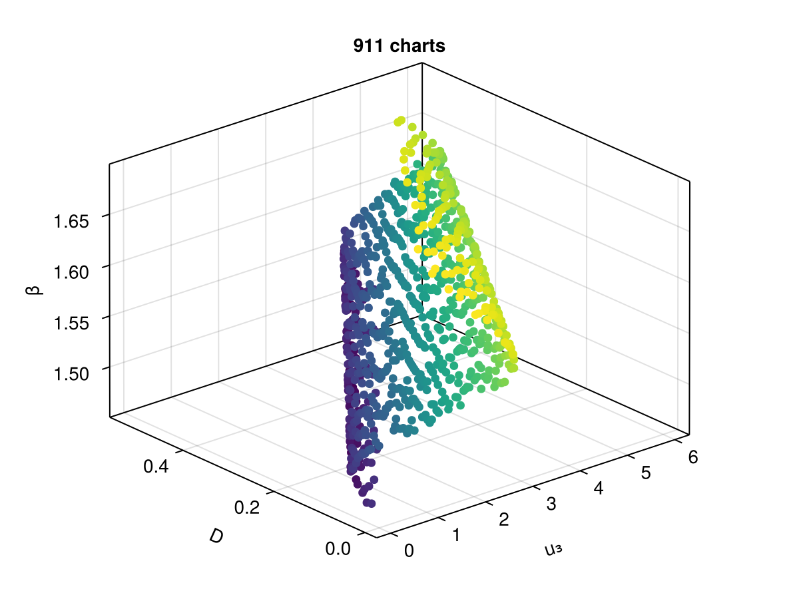
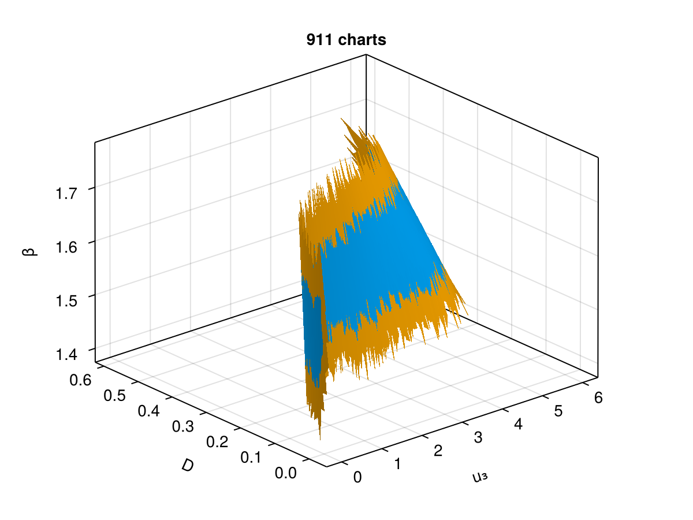
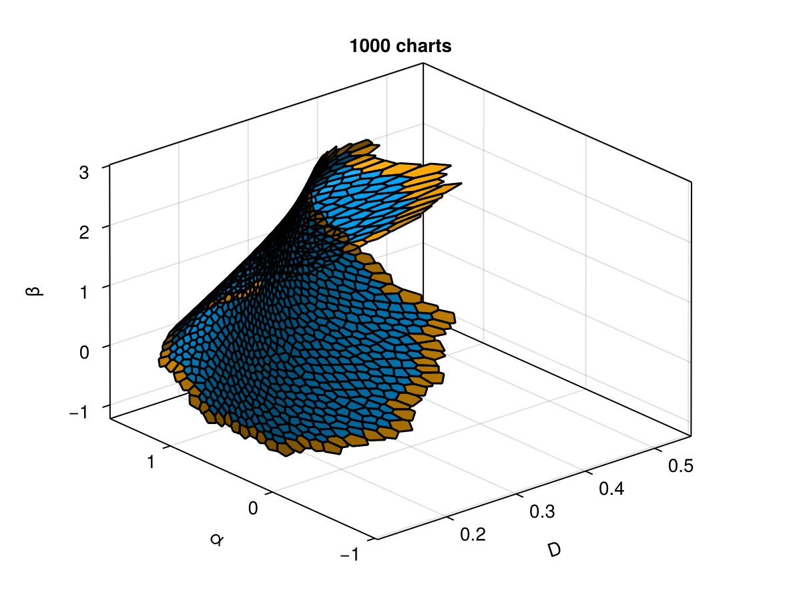
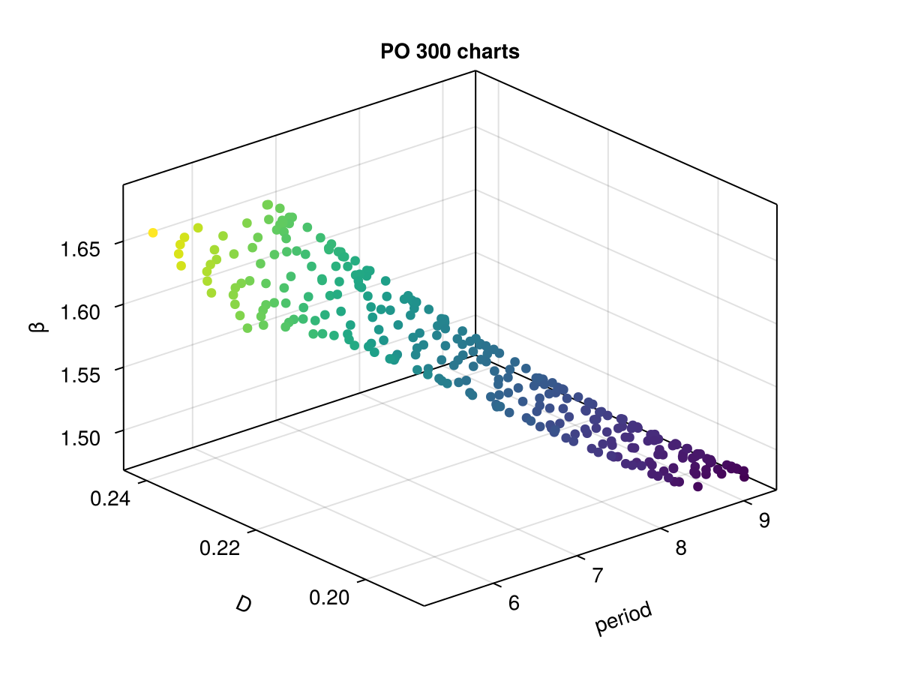
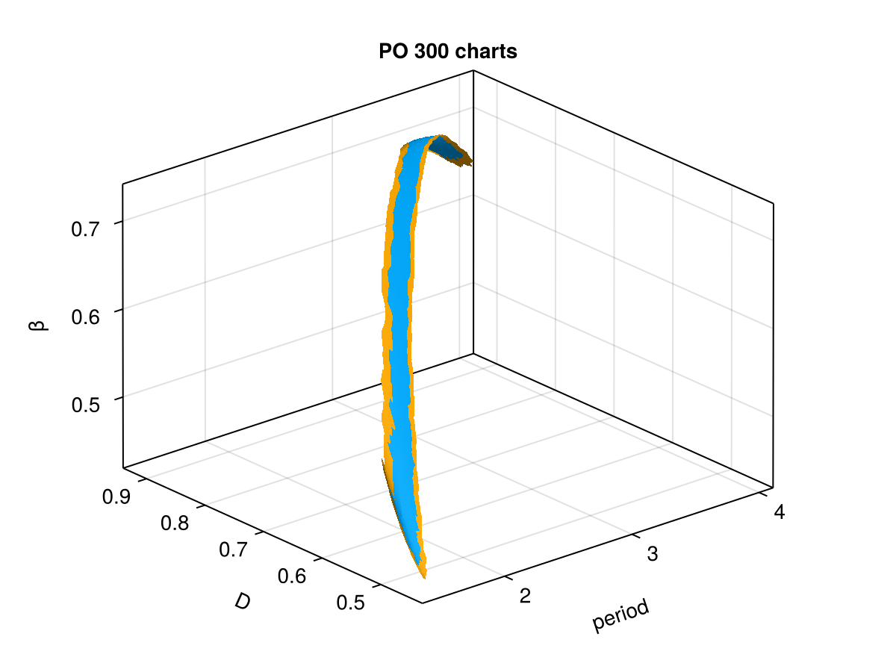

🟡 ABC problem
The goal of this tutorial is to show how to compute a Manifold from a BifurcationProblem as function of two free parameters.
using CairoMakieusing BifurcationKit, MultiParamContinuationconst BK = BifurcationKitconst MPC = MultiParamContinuationfunction abc!(dz, z, p, t = 0) (;D, B, σ, β, α) = p u1, u2, u3 = z dz[1] = -u1 + D*(1 - u1)*exp(u3) dz[2] = -u2 + D*(1 - u1)*exp(u3) - D*σ*u2*exp(u3) dz[3] = -u3 - β*u3 + D*B*(1 - u1)*exp(u3) + D*B*α*σ*u2*exp(u3) dzendpar_abc = (D = 0.11, B = 8., α = 1., σ = 0.04, β = 1.56)z0 = [1., 0., 0. ]prob_bk = BifurcationProblem(abc!, z0, par_abc, (@optic _.D), record_from_solution = (x, p; k...) -> (u3 = x[3], u1 = x[1], u2 = x[2]),)opts_br = ContinuationPar(p_max = 1.5, n_inversion = 8, nev = 3)br = BK.continuation(prob_bk, PALC(), opts_br; normC = norminf) ┌─ Curve type: EquilibriumCont
├─ Number of points: 38
├─ Type of vectors: Vector{Float64}
├─ Parameter D starts at 0.11, ends at 1.5
├─ Algo: PALC [Secant]
└─ Special points:
- # 1, hopf at D ≈ +0.20599319 ∈ (+0.20599317, +0.20599319), |δp|=2e-08, [converged], δ = ( 2, 2), step = 12
- # 2, hopf at D ≈ +0.23201597 ∈ (+0.23201591, +0.23201597), |δp|=7e-08, [converged], δ = (-2, -2), step = 16
- # 3, hopf at D ≈ +0.26423661 ∈ (+0.26423544, +0.26423661), |δp|=1e-06, [converged], δ = ( 2, 2), step = 21
- # 4, hopf at D ≈ +0.35310237 ∈ (+0.35300637, +0.35310237), |δp|=1e-04, [converged], δ = (-2, -2), step = 28
- # 5, endpoint at D ≈ +1.50000000, step = 37
We can also compute the stationary points as function of two free parameters:
prob = MPC.ManifoldProblem_BK( prob_bk, br.sol[1].x, (@optic _.D), (@optic _.β); record_from_solution = (X, p; k...) -> begin return (β = X[end], D = X[end-1], u3 = X[3]) end, finalize_solution = (X,p) -> begin D = X[end-1] β = X[end] keep = (0.01 <= D <= 0.5) && (1.5 <= β <= 1.65) return keep end, )S_eq = @time MPC.continuation(prob, Henderson(np0 = 3, θmin = 0.001, # use_curvature = true, use_tree = true, ), CoveringPar(max_charts = 20000, max_steps = 10000, verbose = 0, newton_options = NewtonPar(tol = 1e-10), R0 = .04, ϵ = 0.1, delta_angle = 10.15, ))Surface 2-d
├─ # charts = 911
└─ problem =
2-d Manifold Problem
├─ n = 5
└─ m = 3
You can plot the data as follows
function plot_data(S; k...) fig = Figure() ax = Axis3(fig[1,1], zlabel = "β", xlabel = "u₃", ylabel = "D", title = "$(length(S)) charts") plot_data!(ax, S; k...) fig, axendfunction plot_data!(ax, S; ind = (3,4,5),ind_col = 1, fil=x->true, cols = [real(c.index) for c in filter(x -> fil(x.u), S.atlas)]) pts = mapreduce(c->[c.u[ind[1]], c.u[ind[2]], c.u[ind[3]]]', vcat, filter(x -> fil(x.u), S.atlas)) hm = scatter!(ax, pts, color = cols)endf, ax = plot_data(S_eq)f
or using the function MPC.plotd
fig = Figure()ax = Axis3(fig[1,1], zlabel = "β", xlabel = "u₃", ylabel = "D", title = "$(length(S_eq)) charts")MPC.plotd(ax, S_eq; draw_tangent = true, plot_center = false, draw_edges = false, ind_plot = (3,4,5) )fig
Surface of Hopf points as function of 3 parameters
opts_cover = CoveringPar(max_charts = 1000, max_steps = 1000, # verbose = 1, newton_options = NewtonPar(tol = 1e-11, verbose = false), R0 = .1, ϵ = 0.15, )atlas_hopf = @time MPC.continuation(deepcopy(br), 1, (@optic _.α), (@optic _.β), opts_cover; alg = Henderson(np0 = 5, θmin = 0.001, use_curvature = false, use_tree = true, ), )Surface 2-d
├─ # charts = 1000
└─ problem =
2-d Manifold Problem
├─ n = 7
└─ m = 5
fig = Figure()ax = Axis3(fig[1,1], zlabel = "β", xlabel = "D", ylabel = "α", title = "$(length(atlas_hopf)) charts")MPC.plotd(ax, atlas_hopf; draw_tangent = true, plot_center = false, draw_edges = true, ind_plot = (4, 5, 6) )fig
Surface of Periodic orbits as function of 2 parameters
We trace the curve of periodic orbits from a Hopf point. Note that this can be improved a lot using the linear solver BK.COPBLS, we do not do it here to simplify the code.
argspo = (record_from_solution = (x, p; k...) -> begin xtt = BK.get_periodic_orbit(p.prob, x, p.p) return (max = maximum(xtt[3,:]), min = minimum(xtt[3,:]), period = x[end]) end, plot_solution = (ax, x, p; k...) -> begin xtt = BK.get_periodic_orbit(p.prob, x, p.p) lines!(ax, xtt.t, xtt.u[1,:]; label = "u1", linewidth = 2) lines!(ax, xtt.t, xtt.u[2,:]; label = "u2") BK.plot!(get(k, :ax1, nothing), br) end, )# continuation parametersopts_po_cont = ContinuationPar(dsmax = 0.03, dsmin = 1e-4, ds = 0.0005, max_steps = 130, tol_stability = 4e-2, plot_every_step = 20)br_po = BK.continuation( br, 1, opts_po_cont, Collocation(30, 4; jacobian = BK.DenseAnalyticalInplace()); δp = 0.0001, argspo..., normC = norminf) ┌─ Curve type: PeriodicOrbitCont from Hopf bifurcation point.
├─ Number of points: 131
├─ Type of vectors: Vector{Float64}
├─ Parameter D starts at 0.20609319124934633, ends at 0.2563993448424891
├─ Algo: PALC [Secant]
└─ Special points:
- # 1, bp at D ≈ +0.21721988 ∈ (+0.21721988, +0.21722527), |δp|=5e-06, [converged], δ = ( 1, 0), step = 27
- # 2, bp at D ≈ +0.21468033 ∈ (+0.21468033, +0.21468076), |δp|=4e-07, [converged], δ = (-1, 0), step = 39
- # 3, bp at D ≈ +0.22192904 ∈ (+0.22179540, +0.22192904), |δp|=1e-04, [converged], δ = ( 1, 0), step = 49
- # 4, bp at D ≈ +0.23257457 ∈ (+0.23245148, +0.23257457), |δp|=1e-04, [converged], δ = (-1, 0), step = 54
- # 5, endpoint at D ≈ +0.25281845, step = 131
f, ax = BK.plot(br, br_po, branchlabel = ["equilibria", "periodic orbits"])
xlims!(ax, (0.1,0.4))
fWe can now compute the manifold
using LinearAlgebraconst coll = br_po.prob # I know! This is not very good...prob = MPC.ManifoldProblem_BK( br_po.prob, br_po.sol[1].x, (@optic _.D), (@optic _.β), record_from_solution = (X, p; k...) -> begin xtt = BK.get_periodic_orbit(coll, X[1:end-2], nothing) Max = maximum(xtt[3,:]) return (u3 = Max, D = X[end-1], β = X[end], period = X[end-2]) end, finalize_solution = (X,p) -> begin D = X[end-1] β = X[end] keep = (0.1 <= D <= 0.5) && (1.5 <= β <= 1.65) return keep end, )S_po = @time MPC.continuation(prob, Henderson(np0 = 6, θmin = 0.001, use_curvature = true, ), CoveringPar(max_charts = 20000, max_steps = 300, verbose = 1, newton_options = NewtonPar(tol = 1e-10, verbose = false), R0 = .5, ϵ = 0.4, delta_angle = 4pi, ) )Surface 2-d
├─ # charts = 300
└─ problem =
2-d Manifold Problem
├─ n = 366
└─ m = 364
fig = Figure()ax3 = Axis3(fig[1,1], xlabel = "period", ylabel = "D", zlabel = "β", title = "PO $(length(S_po)) charts")pts = mapreduce(c->[c.data.period, c.data.D, c.data.β ]', vcat, S_po.atlas)scatter!(ax3, pts, color = [c.data[2] for c in S_po.atlas])fig
or
fig = Figure()ax3 = Axis3(fig[1,1], zlabel = "β", xlabel = "period", ylabel = "D", title = "PO $(length(S_po)) charts")MPC.plotd(ax3, S_po; draw_tangent = true, plot_center = false, draw_edges = false, ind_plot = (204,205,206) )fig